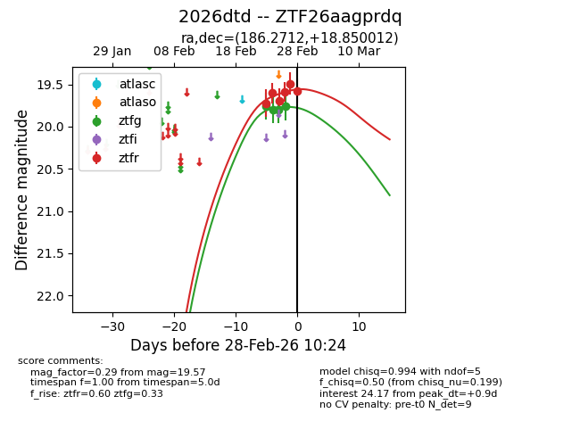
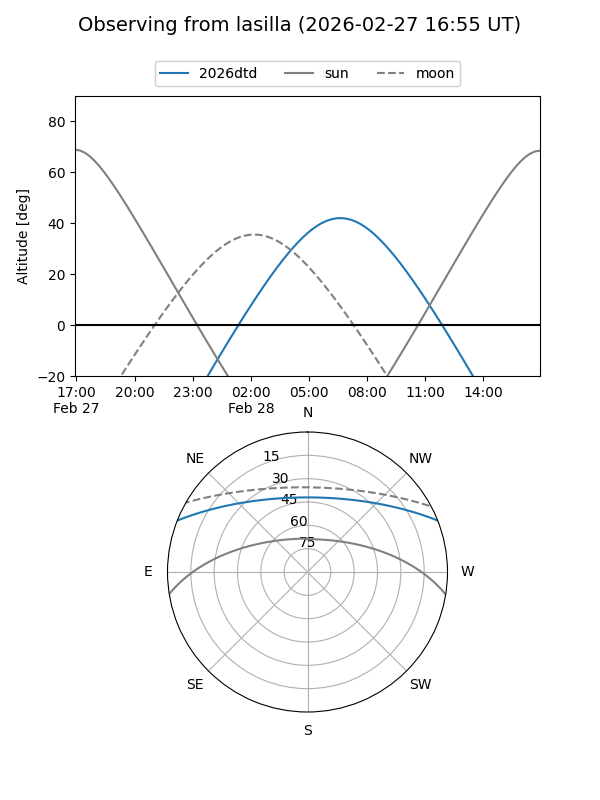
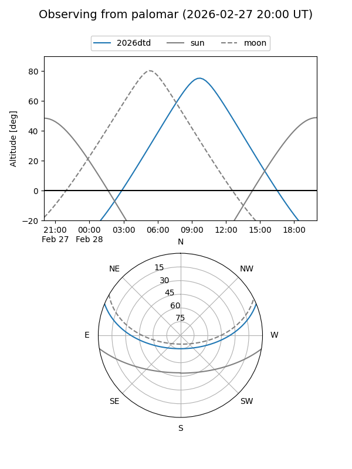
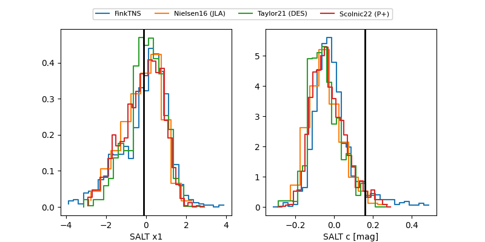

2026dtd
Target 2026dtd at 2026-02-28 10:25
Aliases and brokers:
FINK: link
Lasair: link
ALeRCE: link
TNS: link
YSE: link
alt names
ZTF26aagprdq (ztf,fink_ztf)
2026dtd (tns,yse)
Coordinates:
equatorial (ra, dec) = 186.2712,+18.85001
equatorial (HMS+DMS) = 12:25:05.09,+18:51:00.04
galactic (l, b) = (265.3586,+79.74285)
Flags:
Photometry:
last ztfg=19.76, ztfr=19.57
4 ztfg, 6 ztfr detections
Lightcurve

Visibility


Additional plots
